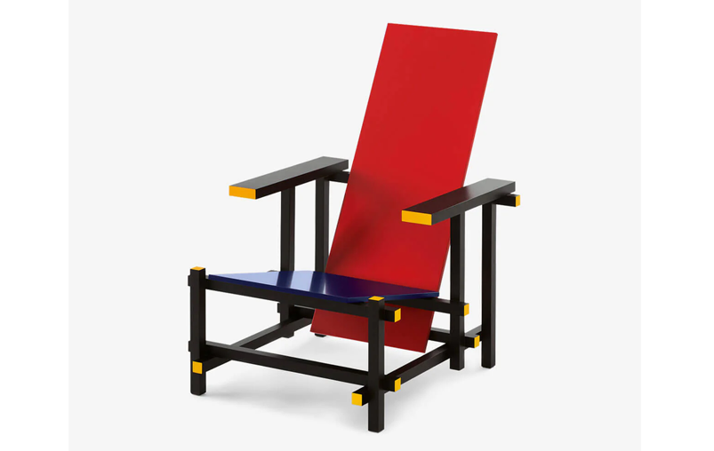

El Neoplasticismo es un movimiento artístico caracterizado por la abstracción y la reducción formal, utilizando líneas rectas y colores primarios para expresar una nueva estética visual y un lenguaje universal.


